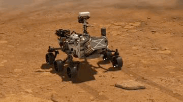
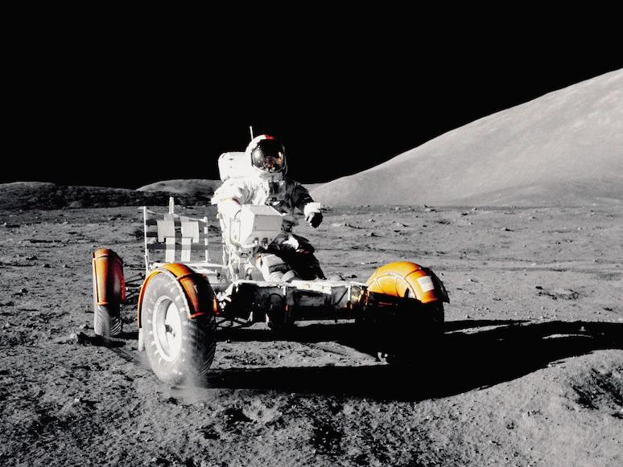

A rover (or sometimes planetary rover) is a planetary surface exploration device designed to move across the solid surface on a planet or other planetary mass celestial bodies. Some rovers have been designed as land vehicles to transport members of a human spaceflight crew; others have been partially or fully autonomous robots. Rovers are typically created to land on another planet (other than Earth) via a lander-style spacecraft, tasked to collect information about the terrain, and to take crust samples such as dust, soil, rocks, and even liquids. They are essential tools in space exploration.
Rovers which land on celestial bodies far from the Earth, such as the Mars Exploration Rovers, cannot be remotely controlled in real-time since the speed at which radio signals travel is far too slow for real-time or near-real-time communication. For example, sending a signal from Mars to Earth takes between 3 and 21 minutes. These rovers are thus capable of operating autonomously with little assistance from ground control as far as navigation and data acquisition are concerned, although they still require human input for identifying promising targets in the distance to which to drive, and determining how to position itself to maximize solar energy. Giving a rover some rudimentary visual identification capabilities to make simple distinctions can allow engineers to speed up the reconnaissance.
During the NASA Sample Return Robot Centennial Challenge, a rover, named Cataglyphis, successfully demonstrated autonomous navigation, decision-making, and sample detection, retrieval, and return capabilities.
Non-wheeled approaches
Other rover designs that do not use wheeled approaches are possible. Mechanisms that utilize "walking" on robotic legs, hopping, rolling, etc. are possible. For example, Stanford University researchers have proposed "Hedgehog", a small cube-shaped rover that can controllably hop—or even spin out of a sandy sinkhole by corkscrewing upward to escape—for surface exploration of low gravity celestial bodies.

Marsokhod Main article: Marsokhod The Marsokhod was a Soviet rover (hybrid, with both controls telecommand and automatic) aimed at Mars, part of the Mars 4NM and scheduled to commence after 1973 (according to the plans of 1970). It was to be launched by a N1 rocket, which never flew successfully. Sojourner The Mars Pathfinder mission included Sojourner, the first rover to successfully deploy on another planet. NASA, the space agency of the United States, launched Mars Pathfinder on 4 December 1996; it landed on Mars in a region called Chryse Planitia on 4 July 1997. From its landing until the final data transmission on 27 September 1997, Mars Pathfinder returned 16,500 images from the lander and 550 images from Sojourner, as well as data from more than 15 chemical analyses of rocks and soil and extensive data on winds and other weather factors. Chandrayaan 3 Chandrayaan-3 is a planned mission by India, consisting of a lunar lander and a rover. It would be a re-attempt to demonstrate soft landing, following the failure of Chandrayaan-2's Vikram lander.
